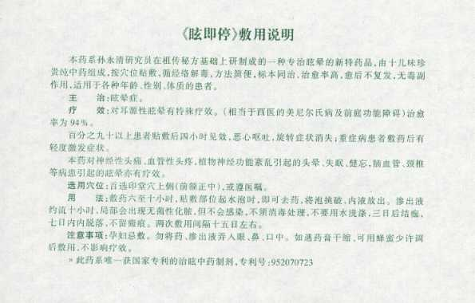

根治眩晕不是神话
1995年6月6日，新华社以“我国专家中医治疗眩晕症有突破”为题报道了《眩即停》获国家专利的消息，《健康报》《中国医药报》《科技日报》《光明日报》等相继做过报道。几年来，眩即停已治愈了20多个国家和地区的患者数万人。其出色的疗效，结束了眩晕症是疑难症的历史。
《眩即停》
《眩即停》是中药系列，以外敷为主`配合口服，对梅尼埃病`前庭功能障碍等耳眩晕，对颈椎病`血管性头痛有疗效。治愈率在97%以上。其特点为疗程短`见效快`治愈率高等，愈后不复发。1995年获国家专利，同年获中国传统医药博览会最高奖“华佗奖”。并录入中国专利精选。
《眩即停》说明书：
